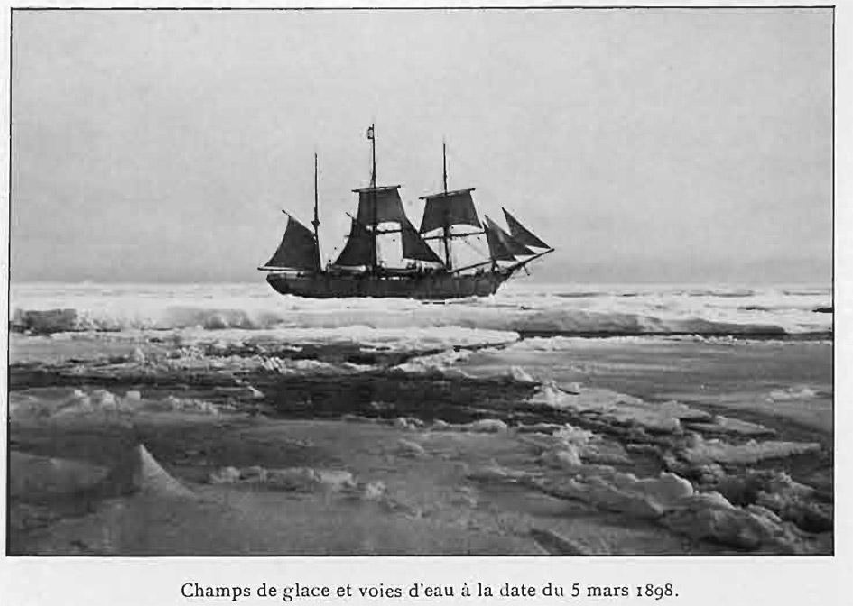
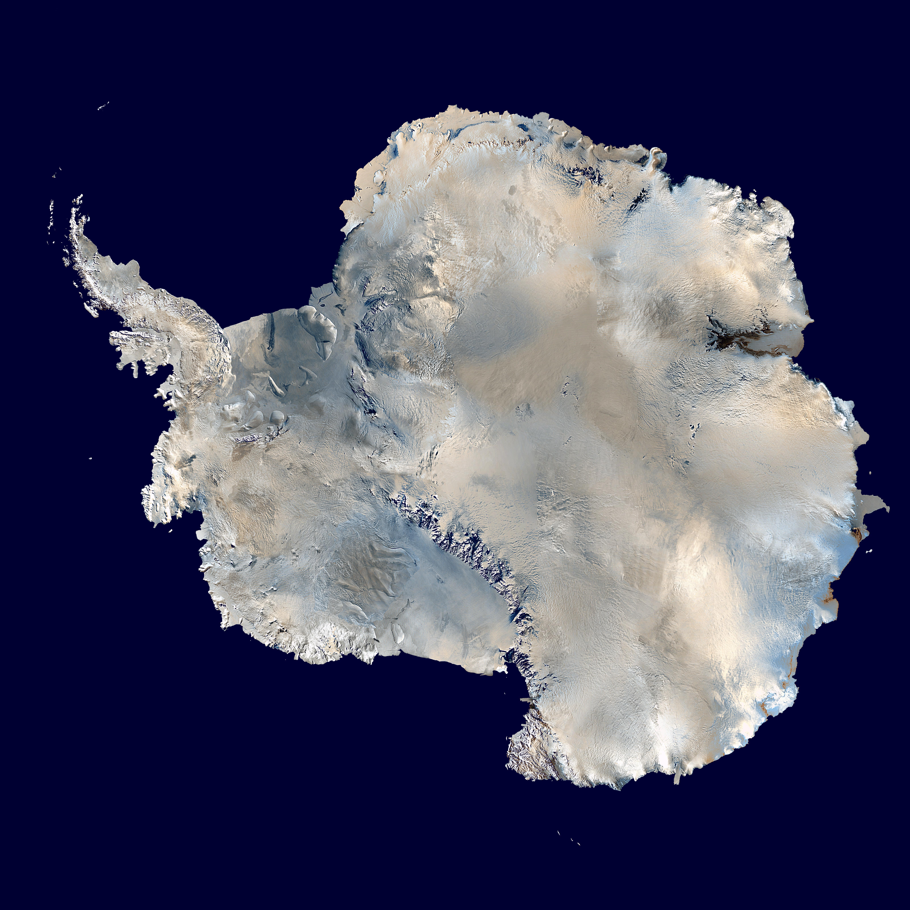
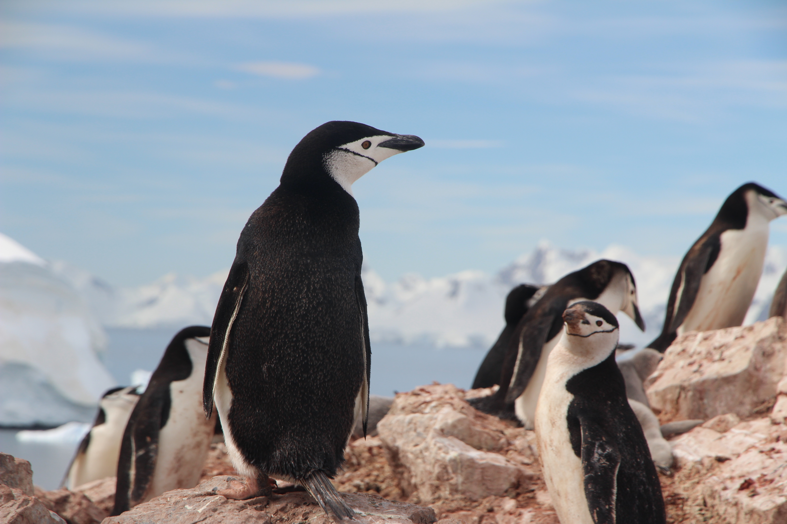

Exploration History
The ice shelves of Antarctica were probably first seen in 1820, during a Russian expedition led by Fabian Gottlieb von Bellingshausen and Mikhail Lazarev.

Geography
Antarctica is the southernmost continent and is surrounded by the Southern Ocean. It is the coldest, driest, and windiest continent, with the highest average elevation of all continents.

Wildlife
Antarctica is home to a variety of unique wildlife, including penguins, seals, and whales. These animals have adapted to the harsh conditions of the continent.

Climate Change
Antarctica is experiencing significant changes due to global warming, with ice shelves collapsing and sea levels rising.